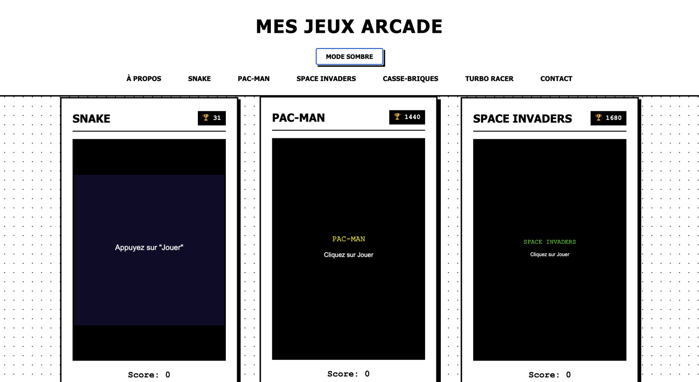

Jeux Retro
Site en front qui contient plusieurs jeux retro
Contexte & Objectif
Retro Games Hub est un projet réalisé en cours (choix libre) dont l'objectif principal était de mettre en pratique des concepts avancés de JavaScript. J'ai conçu une plateforme regroupant plusieurs classiques du jeu d'arcade : Pac-Man, Casse-briques, Racing, Space Invaders et Snake.
Le défi consistait à ne pas seulement afficher du contenu, mais à créer une véritable interactivité : gestion des collisions, moteurs de rendu pour les jeux, et systèmes de score en temps réel, le tout dans une interface fluide et immersive.
Besoin technique : Développer une application web interactive avec une logique de jeu complexe via JavaScript natif.
Stack Technique
Démo & Déploiement

Challenges Techniques Rencontrés
-
Gestion Multi-Jeux & Contrôles
Défi : Éviter les conflits de touches entre les jeux et empêcher la page web de défiler pendant une partie.
Solution : Création d'un état global (window.jeuActif) pour isoler les contrôles du jeu en cours, et utilisation dee.preventDefault()pour figer l'écran. -
Sauvegarde Locale des Données
Défi : Conserver les records (High Scores) de chaque jeu et le choix du thème (sombre/clair) même après la fermeture du site.
Solution : Utilisation de l'API WeblocalStoragepour mémoriser ces informations de façon persistante dans le navigateur du joueur.
Rétrospective Personnelle
Ce que j'ai appris :
- Logique JavaScript Avancée : Structuration de code complexe (gestion des états, boucles de jeu, détection de collisions) sans moteur de jeu externe.
- Maîtrise des Événements : Interception fluide des actions de l'utilisateur (clavier, boutons virtuels) pour garantir une jouabilité sans latence.
- Persistance des Données : Manipulation de l'API
localStoragepour conserver les meilleurs scores et les préférences de thème des joueurs.